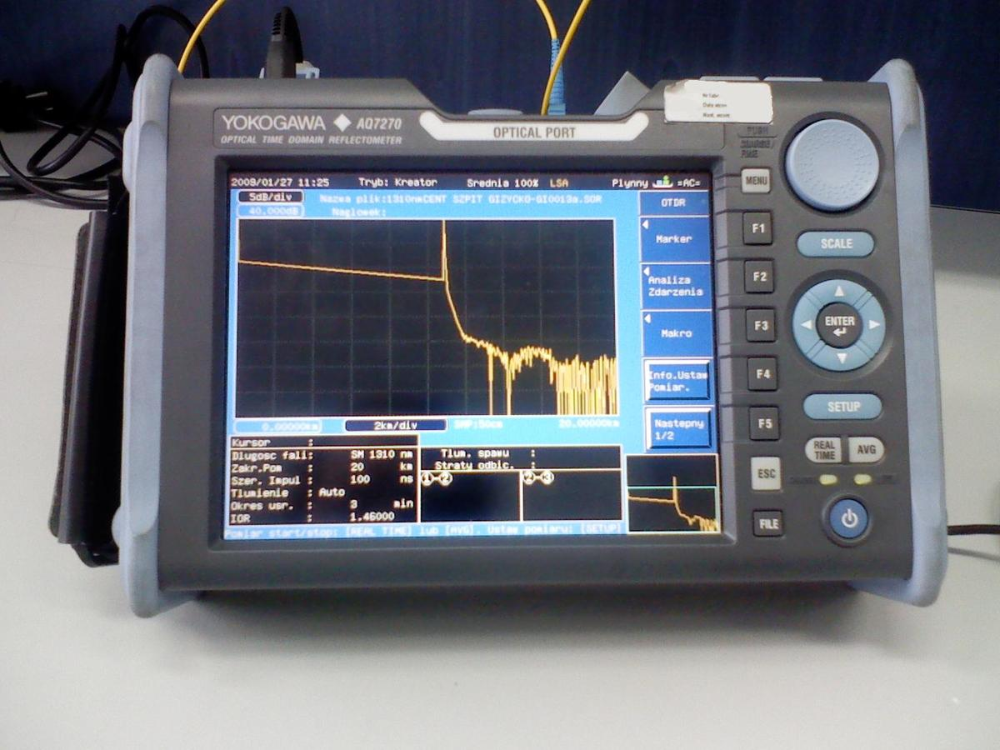
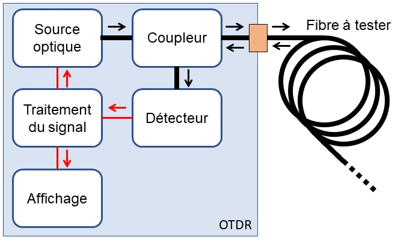
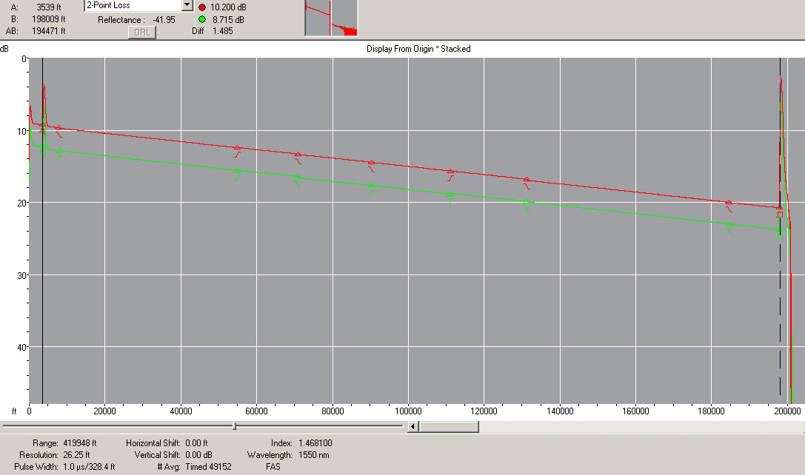

🔬 Guía completa de OTDR: manipulación, medición e interpretación
Complemento de la PARTE 3.1 de la Guía de Telecomunicaciones. Aquí encontrará el procedimiento detallado que se usa en campo para medir enlaces de fibra óptica con un OTDR (Reflectómetro Óptico en el Dominio del Tiempo).
1. ¿Qué es el OTDR y para qué sirve?
El OTDR inyecta pulsos de luz por la fibra y mide la luz que vuelve por dispersión de Rayleigh y por los reflejos de los conectores y empalmes. Con eso construye una traza: un gráfico de potencia (dB) versus distancia (km) que muestra dónde está cada evento y cuánta pérdida produce.
Sirve para: localizar cortes y empalmes, medir la atenuación del tramo (dB/km), detectar conectores sucios o mal emparejados, verificar la longitud del enlace y archivar una línea base para comparaciones futuras.

2. Manipulación correcta del equipo y de la fibra
- No mire nunca dentro del conector: el pulso láser es invisible e irrita la retina. Trate todo extremo de fibra como si emitiera láser.
- Limpie e inspeccione siempre el conector del OTDR y el del enlace antes de conectar: use limpiador de lente seco o húmedo y, si tiene, un visualizador de fibra (video probe). La suciedad es la causa número uno de eventos fantasma.
- Use bobina de lanzamiento (launch cable) de 300 m a 1 km para sacar el primer conector fuera de la zona muerta de arranque; y bobina de recepción (receive cable) en el otro extremo para ver el final de la fibra.
- Proteja los extremos con tapas limpias cuando no estén conectados; no deje conectores destapados ni sobre superficies sucias.
- Respete el radio mínimo de curvatura de la fibra (típicamente 30 mm en patch cords); nunca doble, tire ni pise el cordón óptico.
- Verifique batería, calibración y fecha antes de salir a campo; lleve adaptadores limpios y bobinas conocidas.
- Conecte con el OTDR apagado o en standby cuando sea posible, y confirme siempre que la fibra esté muerta (sin servicio) o que el OTDR esté autorizado para la longitud de onda que usará.
3. Procedimiento de medición paso a paso
- Identifique y etiquete la fibra a medir; confirme permisos y que el tramo esté fuera de servicio si aplica.
- Limpie e inspeccione conectores (del OTDR, del panel y del enlace).
- Conecte la bobina de lanzamiento al OTDR y esta al conector del enlace.
- Configure el equipo:
- Índice de refracción (IOR): el valor del fabricante de la fibra; un IOR incorrecto desplaza todas las distancias.
- Longitud de onda: 1310 nm y 1550 nm como mínimo (medir siempre en ambas); 1625/1650 nm para mantenimiento de redes activas con el equipo adecuado.
- Rango (range): de 1,5 a 3 veces la longitud del enlace; un rango demasiado grande reduce la resolución del evento.
- Tiempo de promediación: aumente hasta que la traza sea limpia; más promediación = menos ruido, más tiempo.
- Ancho de pulso: pulsos cortos para alta resolución de eventos; pulsos largos para mayor alcance.
- Lanze la medición y espere la traza completa; repita si es necesario con otro pulso.
- Coloque marcadores A/B al inicio y al fin del tramo; lea la pérdida total, la atenuación media (dB/km) y la lista de eventos.
- Repita desde el otro extremo (medición bidireccional): los empalmes mal fusionados se disimulan en una sola dirección; el promedio bidireccional es el criterio correcto.
- Guarde la traza en formato .SOR con nombre normalizado (sitio-tramo-fecha-λ) y adjunte la captura al ticket.
- Compare con los criterios de aceptación y con la línea base anterior.

4. Cómo leer la traza
- Pendiente recta (dB/km): es la atenuación natural de la fibra; la pendiente sube con la distancia.
- Evento reflectante (pico hacia arriba): conectores, empalmes reflectivos o el final de la fibra; produce también zona muerta de evento.
- Evento no reflectante (escalón hacia abajo sin pico): empalme por fusión o curva excesiva.
- Zona muerta de arranque: los primeros metros donde el detector está saturado; por eso se usa la bobina de lanzamiento.
- Cola del Rayleigh / ruido: cuando la traza se vuelve irregular al final, la fibra terminó (o hay un corte).

Ejemplos de trazas típicas (guía visual)
Además de la traza real, estos esquemas resumen los patrones que más verá en campo. Aprendalos de memoria: una mirada rápida bastará para sospechar qué pasa en el enlace.

1 · Traza normal (enlace sano)
- Pendiente uniforme (≈0,21 dB/km a 1550 nm)
- Empalme casi plano (<0,1 dB)
- Reflexión clara del final y luego ruido

2 · Evento reflectivo (conector)
- Pico agudo + escalón de pérdida
- Pico muy ancho o grande = sucio o mal conectado
- Tras él hay zona muerta: no ve eventos cercanos

3 · Empalme por fusión (bueno y malo)
- Solo escalón, sin reflejo = es una fusión
- ≤0,1 dB aceptable · 0,3 dB ya aprieta
- >0,5 dB → rehacer el empalme

4 · Macroflexión (fibra apretada)
- Escalón no reflectivo sin empalme registrado
- Tipico de bandejas mal cerradas o curva cerrada
- Aparece más fuerte en 1550 nm que en 1310 nm

5 · Corte / fibra rota
- Caída abrupta al nivel de ruido
- Sin reflexión = corte limpio · con pico = cara reflectiva
- La distancia del evento = punto del corte

6 · Fantasmas (ghosts)
- Eventos falsos a distancias múltiplas de un conector
- No corresponden a nada físico en la ruta
- Solución: limpiar/reconectar o atenuar el enlace
5. Longitud de onda: ¿cuál usar?
| Longitud de onda | Uso principal | Observación |
|---|---|---|
| 1310 nm | Medición básica; zona de dispersión cero | Atenuación mayor (~0,35 dB/km típico) |
| 1550 nm | Medición de largo alcance y detección de macrocurvas | Atenuación mínima (~0,20-0,25 dB/km); sensible a curvas |
| 1625 / 1650 nm | Mantenimiento de red activa y PON (con filtros) | Requiere OTDR y adaptadores específicos |
6. Criterios típicos de aceptación (referencia)
| Elemento / parámetro | Criterio habitual |
|---|---|
| Empalme por fusión | Menor de 0,1 dB (idealmente invisible) |
| Conector (cada uno) | Menor de 0,5 dB |
| Pendiente a 1310 nm | Hasta ~0,35 dB/km |
| Pendiente a 1550 nm | Hasta ~0,25 dB/km |
| Pérdida total del enlace | Según presupuesto óptico del diseño (ver PARTE 3.1) |
7. Errores comunes
- Usar un rango demasiado grande y perder resolución en los eventos.
- Olvidar la bobina de lanzamiento (no se ve el primer conector ni el empalme 1).
- No limpiar el conector: la suciedad aparece como un evento de pérdida alta.
- Configurar mal el IOR: todas las distancias quedan desplazadas (puede variar ~1-2%).
- Medir solo en una dirección y dar un empalme por bueno.
- Comparar trazas de λ distintas sin ajustar: la pendiente de 1550 nm siempre es mayor que la de 1310 nm.
- No guardar la traza o perder el archivo .SOR (la evidencia es parte del trabajo).
8. Seguridad
9. Mini-checklist de campo
- Permisos y fibra identificada/etiquetada.
- Limpieza e inspección de conectores.
- Bobina de lanzamiento conectada.
- IOR, rango, pulso y promediación configurados.
- Medición en 1310 y 1550 nm.
- Marcadores A/B colocados; eventos revisados.
- Medición del otro extremo (bidireccional).
- Traza .SOR guardada + captura al ticket.
- Conectores con tapa; equipo y bobinas guardados.
10. Anexo: los 4 patrones clave en profundidad
Para cerrar la teoría, estos cuatro patrones gobiernan toda traza que verá en el equipo. Aquí van con cifras, tablas y ejemplos calculados: pendiente, eventos reflectantes, eventos no reflectantes y zona muerta de arranque.
10.1 Patrón 1 — Pendiente recta (la atenuación natural)
La fibra pierde potencia de forma proporcional a la distancia: en la traza eso es una recta descendente. Su pendiente en dB/km es la atenuación real de la fibra en la longitud de onda medida. La pendiente NO sube con la distancia (es recta); lo que sube con la distancia es la pérdida acumulada: doble distancia = doble pérdida.

Valores típicos de atenuación (fibra monomodo G.652)
| Longitud de onda | Atenuación típica | Comentario |
|---|---|---|
| 850 nm (multimodo) | 2,5 – 3,0 dB/km | Sólo datacenters/centros |
| 1310 nm | 0,32 – 0,35 dB/km | Zona de dispersión cero; buena para medir distancia |
| 1383 nm | < 0,35 dB/km (fibra nueva) | En fibra antigua aparece el «pico de agua» (>1 dB/km) |
| 1490 nm | 0,22 – 0,25 dB/km | PON downstream |
| 1550 nm | 0,19 – 0,21 dB/km | Mínima atenuación; la más usada en troncales |
| 1625 / 1650 nm | 0,19 – 0,23 dB/km | Mantenimiento y OTDR «sin apagar» (OUTDR) |
Ejemplos calculados
- Ejemplo A (pérdida acumulada): enlace de 12 km medido a 1550 nm con pendiente 0,21 dB/km → pérdida de fibra = 12 × 0,21 = 2,52 dB. Si el diseño estima 3 empalmes de 0,08 dB → total ≈ 2,52 + 0,24 = 2,76 dB.
- Ejemplo B (obtener la pendiente de la traza): a km 3 el nivel es −11,2 dB y a km 13 es −15,7 dB → Δ = 4,5 dB en 10 km → 0,45 dB/km. Está al DOBLE de lo esperado (0,21) → la traza es sospechosa: revisar instalación (macrobends distribuidos, fibra dañada) o el método (conector sucio no cambia la pendiente; un empalme malo sólo agrega un escalón).
- Ejemplo C (ficha de aceptación): el criterio de puesta en servicio dice «máx. 0,25 dB/km a 1550 nm». Su medición da 0,23 dB/km → conforme; si diera 0,30 → no conforme, no se firma sin revisión.
10.2 Patrón 2 — Evento reflectante (pico hacia arriba)
Cuando la luz encuentra una discontinuidad con aire (conector mal acoplado, suciedad, empalme mecánico, corte con cara reflectiva, fin de fibra) parte de la luz regresa al OTDR: aparece un pico agudo (reflexión de Fresnel) seguido de una pérdida en escalón y de una zona muerta de evento que «ciega» el tramo siguiente.

Reflectancia típica (qué tan «grande» es el pico)
| Elemento | Reflectancia típica | Qué verá en la traza |
|---|---|---|
| Conector PC/UPC limpio | −40 a −55 dB | Pico moderado, zona muerta corta |
| Conector APC | −60 a −70 dB | Pico casi inexistente (el ángulo de 8° evita la reflexión) |
| Conector sucio o con aire | −10 a −25 dB | Pico enorme, zona muerta larga |
| Empalme mecánico | −30 a −45 dB | Pico moderado + pérdida alta |
| Empalme por fusión | < −60 dB (sin pico) | Sólo escalón |
| Final de fibra (cara limpia) | ≈ −12 a −16 dB | Pico fuerte y luego ruido: confirma el fin |
10.3 Patrón 3 — Evento no reflectante (escalón sin pico)
Un escalón descendente sin pico es una pérdida «oscura»: la luz se pierde sin volver. Los dos culpables típicos son el empalme por fusión (intencional, en punto conocido) y la macroflexión (curva cerrada o presión, en punto inesperado). ¿Cómo distinguirlos? Midan a dos longitudes de onda.

| Criterio | Empalme por fusión | Macroflexión |
|---|---|---|
| Forma | Escalón sin pico | Escalón sin pico |
| Ubicación | Conocida (coincide con un punto de empalme) | Inesperada (cualquier punto) |
| Pérdida típica | 0,03 – 0,1 dB (bien hecho) | 0,1 – >1 dB según el doblez |
| 1310 vs 1550 nm | Casi idéntica en ambas | Mayor en 1550/1625 nm |
| Causa | Suciedad, desalineación de núcleo, parámetros de fusión | Radio de curvatura, presión, fibra atrapada en bandeja |
| Acción | Rehacer el empalme | Revisar bandeja/canalización en ese kilómetro |
10.4 Patrón 4 — Zona muerta de arranque y bobina de lanzamiento
Al conectar el OTDR, el propio acople de arranque satura el detector: los primeros metros quedan «ciegos». Sin más, el conector de la cabecera nunca se podría medir. La solución estándar es insertar una bobina de lanzamiento (también llamada dead zone box o fibra de supresión) entre el OTDR y el enlace.

Reglas prácticas de la bobina
- Longitud: 500 m a 1 km (mayor que la zona muerta de su OTDR, con margen).
- La bobina debe estar a la misma longitud de onda de trabajo y en buen estado (una bobina doblada fastidia la medida).
- Procedimiento de sustitución: conecte OTDR → bobina y mida el acople; luego conecte bobina → enlace. La pérdida del conector 1 se evalúa en la bobina y el enlace se mide limpio de esa zona muerta.
- Pulsos cortos vs largos: pulsos cortos (3–10 ns) dan zonas muertas pequeñas pero poco alcance; pulsos largos (µs) alcanzan más kilómetros pero «ciegan» más metros. Elija según la longitud del enlace.
| Tipo de zona muerta | Definición | OTDR moderno típico |
|---|---|---|
| De atenuación | Distancia para recuperar la medición de nivel (±0,5 dB) | 0,5 – 3 m |
| De evento | Distancia mínima para separar dos eventos | 3 – 15 m (peor con pulsos largos) |
| De arranque | La suma anterior sobre el acople inicial | Se elimina con la bobina |
10.5 Ejercicios rápidos (pulse para ver la solución)
Ejercicio 1 — Obtener la pendiente
Pregunta: en una traza a 1550 nm, el nivel es −12,3 dB a km 5 y −16,3 dB a km 15. ¿Es normal la fibra? ¿Cuál es la pendiente?
Solución: Δ = 4,0 dB en 10 km → 0,40 dB/km. Es casi el doble de lo esperado (0,21 dB/km): la fibra NO es normal; sospeche macrobends distribuidos, fibra dañada o un error de medida (índice de refracción mal configurado afecta la distancia, no la pendiente).
Ejercicio 2 — Diagnosticar un pico
Pregunta: la traza muestra un pico de conector con 12 m de zona muerta de evento. ¿Qué hace primero?
Solución: esa zona muerta es ancha → el conector está sucio o con espacio de aire. Primero: inspeccionar/conectar bien (limpia-conectores y torque); re-medir. Si el pico sigue grande, reemplazar el conector o rehacer el empalme mecánico.
Ejercicio 3 — Empalme o macroflexión
Pregunta: a km 7 aparece un escalón de 0,15 dB a 1310 nm y de 0,52 dB a 1550 nm. ¿Empalme o macroflexión? ¿Dónde actúa?
Solución: el escalón crece mucho con la longitud de onda → macroflexión. Acudir a la bandeja/trayecto del km 7 y liberar el doblez o la presión. Si el escalón fuera igual en ambas longitudes de onda, sería empalme.
Ejercicio 4 — Sin bobina no hay dato
Pregunta: quiere certificar el conector de la central con un OTDR de 8 m de zona muerta de evento y sólo tiene un patchcord de 3 m. ¿Sirve?
Solución: no: el conector queda dentro de la zona muerta. Necesita una bobina de lanzamiento ≥ 500 m (o una caja de zonas muertas) para que la saturación caiga dentro de la bobina y el conector quede medible.
11. Enlaces para seguir aprendiendo
- Reflectometría de dominio óptico — Wikipedia
- Videos: curso de OTDR en español (YouTube)
- The FOA — Fiber Optic Association (referencia en inglés)
- Vuelva a la guía principal de telecomunicaciones (PARTE 3.1 y PARTE 9).
Créditos de imágenes
| Imagen | Autor | Licencia |
|---|---|---|
| otdr_yokogawa.jpg | Electron — Wikimedia Commons | CC BY 3.0 |
| otdr_esquema.png | IP user 92,88,82,226 — Wikimedia Commons | CC BY-SA 4.0 |
| otdr_traza_real.jpg | OLC Fiber — Wikimedia Commons | CC BY 2.0 |
| 10 esquemas SVG de trazas y bobina | Elaboración propia PIMVCA | — |